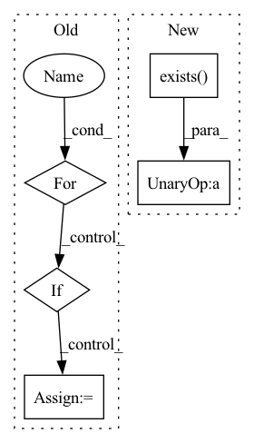

Pattern ID :19582
Before Change
if static_attributes is not None:
static = self._read_static(stations, static_attributes, st, en, as_ts=as_ts)
for k, v in stns.items():
if as_ts:
stns[k] = pd.concat([stns[k], static[k]], axis=1)
else:
stns[k] = {"dynamic": stns[k], "static": static[k]}
After Change
if dynamic_attributes is not None:
dynamic_attributes = check_attributes(dynamic_attributes, self.dynamic_attributes)
if not os.path.exists(self.dyn_fname) :
// read from csv files
// following code will run only once when fetch is called inside init method
// since one file contains data for one dynamic attribute for all stations, thus if we need dataIn pattern: SUPERPATTERN
Frequency: 4
Non-data size: 5
Instances Fragment ID: 63942623
Project Name: atrcheema/ai4water
Commit Name: 518f536a9edfbd2de387303c829d38a8757ee33e
Time: 2021-06-15
Author: ather_abbas786@yahoo.com
File Name: AI4Water/utils/datasets/camels.py
M Class Name: CAMELS_CL
N Class Name: CAMELS_CL
M Method Name: fetch_stations_attributes(7)
N Method Name: fetch_stations_attributes(7)
M Parent Class: Camels
N Parent Class: Camels
M File Name: AI4Water/utils/datasets/camels.py
N File Name: AI4Water/utils/datasets/camels.py
M Start Line: 1282
M End Line: 1324
N Start Line: 1476
N End Line: 1526
Before Change
def get_end_point_status(self, end_point_id):
end_point_activated = False
status_list = self.get_deployment_status_list(end_point_id)
for status_item in status_list:
device_id, status_payload = self.get_status_item_info(status_item)
if str(device_id) == FedMLModelCache.FEDML_ALL_DEVICE_ID_TAG:
end_point_activated = status_payload["end_point_status"]
break
return end_point_activatedAfter Change
self.redis_connection.set(self.get_end_point_status_key(end_point_id), status)
def get_end_point_status(self, end_point_id):
if not self.redis_connection.exists(self.get_end_point_status_key(end_point_id)) :
return False
status_int = self.redis_connection.get(self.get_end_point_status_key(end_point_id)) Fragment ID: 63942620
Project Name: fedml-ai/fedml
Commit Name: c76c11bc0c1e6492ef725d9dd8900a158fafe4a9
Time: 2023-01-08
Author: alex.gpt.llm@gmail.com
File Name: python/fedml/cli/model_deployment/device_model_cache.py
M Class Name: FedMLModelCache
N Class Name: FedMLModelCache
M Method Name: get_end_point_status(2)
N Method Name: get_end_point_status(2)
M Parent Class: object
N Parent Class: object
M File Name: python/fedml/cli/model_deployment/device_model_cache.py
N File Name: python/fedml/cli/model_deployment/device_model_cache.py
M Start Line: 129
M End Line: 137
N Start Line: 127
N End Line: 131
Before Change
def get_end_point_status(self, end_point_id):
end_point_activated = False
status_list = self.get_deployment_status_list(end_point_id)
for status_item in status_list:
device_id, status_payload = self.get_status_item_info(status_item)
if str(device_id) == FedMLModelCache.FEDML_ALL_DEVICE_ID_TAG:
end_point_activated = status_payload["end_point_status"]
break
return end_point_activatedAfter Change
self.redis_connection.set(self.get_end_point_status_key(end_point_id), status)
def get_end_point_status(self, end_point_id):
if not self.redis_connection.exists(self.get_end_point_status_key(end_point_id)) :
return False
status_int = self.redis_connection.get(self.get_end_point_status_key(end_point_id)) Fragment ID: 63942619
Project Name: fedml-ai/fedml
Commit Name: d019aac1f3936222fdb9403c0bc7c2fdaec06b4f
Time: 2023-01-08
Author: alexliang.kh@gmail.com
File Name: python/fedml/cli/model_deployment/device_model_cache.py
M Class Name: FedMLModelCache
N Class Name: FedMLModelCache
M Method Name: get_end_point_status(2)
N Method Name: get_end_point_status(2)
M Parent Class: object
N Parent Class: object
M File Name: python/fedml/cli/model_deployment/device_model_cache.py
N File Name: python/fedml/cli/model_deployment/device_model_cache.py
M Start Line: 129
M End Line: 137
N Start Line: 127
N End Line: 131